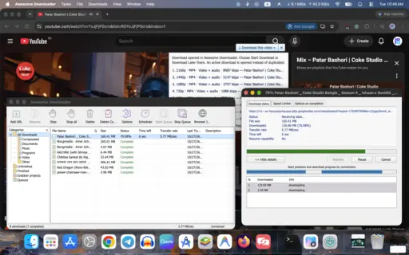

Fast segmented downloads
Split supported HTTP(S) downloads into parallel segments to make the most of your connection.

A fast download manager for Mac with segmented transfers, pause and resume, and browser video detection—all in one tidy desktop app.
Early preview · macOS · Apple Silicon and Intel

Keep large transfers moving, organize what you save, and send supported video downloads straight from your browser.
Split supported HTTP(S) downloads into parallel segments to make the most of your connection.
Manage your queue with pause and resume for supported transfers, download history, and scheduling.
Detect media in Chrome and Edge, choose an available quality, and combine selected tracks locally.
Set a save folder, organize with categories, use Download Later, and apply speed limits when needed.
Download the latest release from GitHub Releases, move the app into Applications, and start managing your transfers.
Open the GitHub Releases page and download the latest build for your Mac (Apple Silicon or Intel).
Open the downloaded package and drag Awesome Downloader.app into your Applications folder.
Follow the in-app guide to enable Chrome or Edge video detection and send downloads directly from your browser.
If macOS blocks the first launch, open System Settings > Privacy & Security and choose Open Anyway. Private or sign-in-required pages, DRM-protected media, and live streams are not supported.
Explore the source code, read setup instructions, or follow development on GitHub.